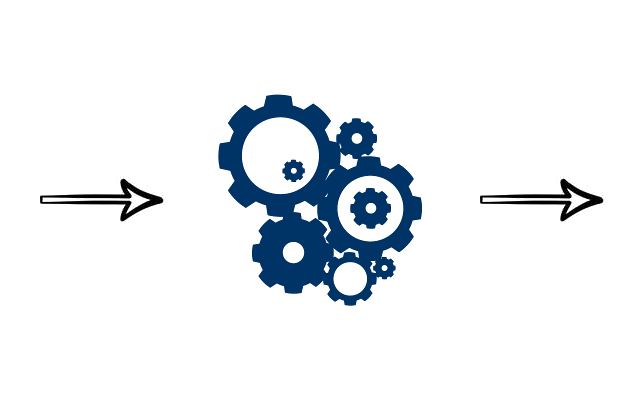
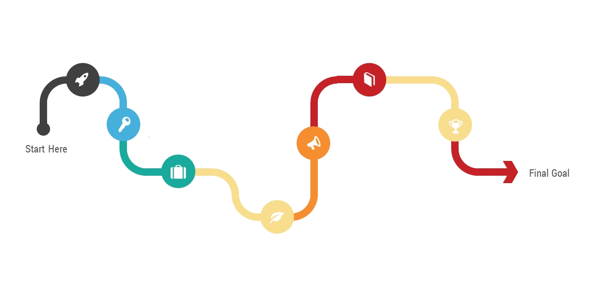

As above so below
Input ➜ Transform ➜ Output

Everything looks like this
It's how things fit together that matters
Interfaces are Borders
Data crosses Borders
High Level Design

is like a flow chart
Keeping things Separate
allows them to change independently
Does everything belong?
Enterprise
System
Application
Class
Method
Statement